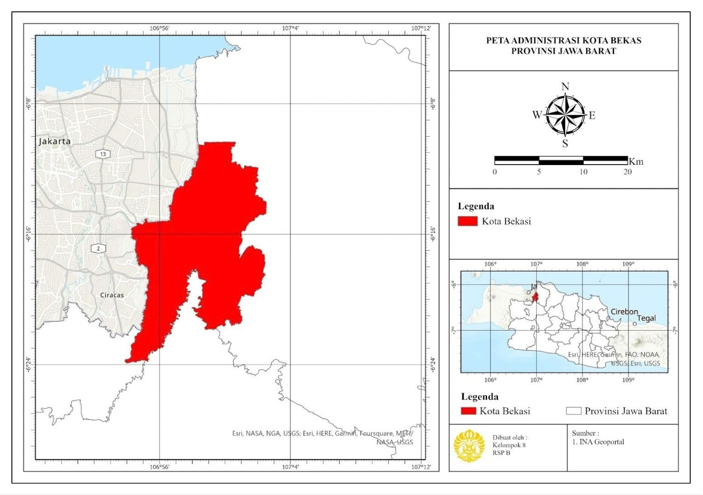

Potensi dan Tantangan Pembangunan Ekonomi Kota Bekasi, Provinsi Jawa Barat
Latar belakang
Produk Domestik Regional Bruto (PDRB) mengukur nilai seluruh barang dan jasa yang dihasilkan suatu wilayah dalam satu periode, sehingga laju pertumbuhannya menjadi indikator utama kemajuan ekonomi daerah. Pertumbuhan yang positif biasanya sejalan dengan meningkatnya investasi, produksi, lapangan kerja, dan kualitas layanan publik. Namun pertumbuhan yang tidak seimbang justru dapat memicu ketimpangan antarwilayah, tekanan lingkungan, dan masalah sosial.
Perbedaan laju pertumbuhan antardaerah tidak muncul begitu saja. Ia dibentuk oleh sumber daya alam, dominasi sektor ekonomi, kualitas infrastruktur, serta kualifikasi tenaga kerja. Kota Bekasi menarik dijadikan studi kasus karena berada di lingkar penyangga Jakarta, tetapi PDRB-nya tercatat menurun dari 2019 ke 2020, dan lajunya berbeda dari daerah lain di Jawa Barat.
Dari situ muncul dua pertanyaan, yakni seberapa timpang ekonomi Kota Bekasi dibandingkan Provinsi Jawa Barat, dan sektor apa yang sebenarnya menjadi keunggulannya? Jawabannya dicari dengan dua alat analisis ekonomi regional, yaitu Indeks Williamson untuk disparitas dan Location Quotient (LQ) untuk sektor unggulan.
Data yang digunakan
Seluruh data adalah data sekunder tabular dari Badan Pusat Statistik. Satu jenis data dipakai untuk dua analisis, yaitu PDRB atas dasar harga berlaku menurut lapangan usaha untuk Kota Bekasi dan Provinsi Jawa Barat, ditambah jumlah penduduk untuk menghitung PDRB per kapita.
| Data | Tahun | Sumber | Peran dalam Analisis |
|---|---|---|---|
| PDRB ADHB menurut lapangan usaha, Kota Bekasi | 2019–2020 | BPS Kota Bekasi | Nilai sektor di daerah studi (Si) |
| PDRB ADHB menurut lapangan usaha, Jawa Barat | 2019–2020 | BPS Provinsi Jawa Barat | Nilai sektor di daerah acuan (Ni) |
| Jumlah penduduk Kota Bekasi dan Jawa Barat | 2019–2020 | BPS | Bobot penduduk dan PDRB per kapita |
| Batas administrasi | – | INA Geoportal | Peta wilayah penelitian |
Metode
Wilayah penelitian
Kota Bekasi terletak di 106°48'28" sampai 107°27'29" BT dan 6°10'6" sampai 6°30'6" LS. Di utara dan timur ia berbatasan dengan Kabupaten Bekasi, di selatan dengan Kabupaten Bogor, dan di barat dengan DKI Jakarta. Kota ini terdiri dari 12 kecamatan dan 56 kelurahan, dengan luas 210,49 km² dan penduduk sekitar 2,56 juta jiwa (SP2020), atau kepadatan sekitar 4.035 jiwa/km². Kepadatan setinggi ini menjadikan Bekasi kota penyangga yang ekonominya sangat bergantung pada perdagangan, jasa, dan konektivitas dengan Jakarta.

Indeks Williamson
Indeks Williamson mengukur ketimpangan pendapatan antarwilayah dengan membandingkan PDRB per kapita suatu daerah terhadap rata-rata provinsinya, dibobot oleh proporsi penduduk. Semakin besar nilainya, semakin timpang.
IW = √[ Σ (Yi − Y)² · (fi / n) ] / Y
Yi adalah PDRB per kapita daerah i, Y adalah PDRB per kapita provinsi, fi adalah jumlah penduduk daerah i, dan n adalah jumlah penduduk provinsi. Hasilnya diklasifikasikan menjadi ketimpangan rendah (< 0,3), sedang (0,3 sampai 0,5), dan tinggi (> 0,5).
Location Quotient
LQ membandingkan porsi suatu sektor dalam ekonomi daerah dengan porsi sektor yang sama di daerah acuan. Di sini porsi dihitung dari nilai PDRB sektoral Kota Bekasi terhadap Jawa Barat.
LQ = (Si / S) / (Ni / N)
Bila LQ > 1, sektor tersebut lebih terkonsentrasi di Bekasi daripada di provinsi, sehingga dikategorikan sektor basis (unggulan). Bila LQ = 1, kemampuannya setara provinsi. Bila LQ < 1, sektor tersebut belum mampu mencukupi dirinya sendiri secara relatif.
Alur pengolahan
| Tahap | Keterangan |
|---|---|
| 1. Pengumpulan data | Mengunduh PDRB sektoral dan data penduduk dari BPS |
| 2. PDRB per kapita | Membagi PDRB dengan jumlah penduduk, untuk kota dan provinsi |
| 3. Indeks Williamson | Menghitung IW tahun 2019 dan 2020, lalu mengklasifikasikannya |
| 4. Location Quotient | Menghitung LQ 16 lapangan usaha per tahun, lalu merata-ratakannya |
| 5. Interpretasi | Menentukan sektor basis (LQ > 1) dan menafsirkannya dengan konteks 2020 |
Hasil
Disparitas ekonomi dengan Indeks Williamson
PDRB Kota Bekasi turun dari Rp69.408,57 miliar (2019) menjadi Rp67.638,06 miliar (2020), atau sekitar 2,55%. Penurunan ini hampir sama besar dengan Jawa Barat secara keseluruhan (sekitar 2,52%), sehingga kontraksi Bekasi pada 2020 lebih mencerminkan guncangan pandemi yang melanda seluruh provinsi daripada kelemahan yang khas Bekasi. Pandemi menekan produksi, investasi, dan konsumsi rumah tangga sekaligus.
| Tahun | PDRB Bekasi (miliar Rp) | PDRB Jabar (miliar Rp) | PDRB per kapita Bekasi (juta Rp) | PDRB per kapita Jabar (juta Rp) | Indeks Williamson |
|---|---|---|---|---|---|
| 2019 | 69.408,57 | 1.490.959,69 | 23,03 | 30,23 | 0,059 |
| 2020 | 67.638,06 | 1.453.380,72 | 26,59 | 29,10 | 0,019 |
Kedua nilai berada jauh di bawah 0,3, sehingga ketimpangan Bekasi terhadap Jawa Barat tergolong rendah. PDRB per kapita Bekasi memang masih di bawah rata-rata provinsi di kedua tahun, tetapi jaraknya menyempit dari sekitar Rp7,2 juta (2019) menjadi sekitar Rp2,5 juta (2020).
Sektor unggulan dengan Location Quotient
Dari 16 lapangan usaha, 11 memiliki LQ rata-rata di atas 1. Sektor-sektor ini menjadi basis ekonomi Kota Bekasi.
| Lapangan Usaha | LQ 2019 | LQ 2020 | Rata-rata | Status |
|---|---|---|---|---|
| Pengadaan Listrik dan Gas | 3,1649 | 2,9856 | 3,0752 | Basis |
| Transportasi dan Pergudangan | 1,9944 | 2,0407 | 2,0175 | Basis |
| Jasa Kesehatan dan Kegiatan Sosial | 1,5326 | 1,5414 | 1,5370 | Basis |
| Perdagangan Besar dan Eceran; Reparasi Mobil dan Sepeda Motor | 1,4671 | 1,5034 | 1,4853 | Basis |
| Penyediaan Akomodasi dan Makan Minum | 1,4442 | 1,4530 | 1,4486 | Basis |
| Konstruksi | 1,4422 | 1,4003 | 1,4212 | Basis |
| Jasa Lainnya | 1,3895 | 1,3856 | 1,3875 | Basis |
| Real Estate | 1,3946 | 1,3762 | 1,3854 | Basis |
| Jasa Keuangan dan Asuransi | 1,1326 | 1,1266 | 1,1296 | Basis |
| Jasa Perusahaan | 1,0345 | 1,0875 | 1,0610 | Basis |
| Pengadaan Air, Pengelolaan Sampah, Limbah, dan Daur Ulang | 1,0504 | 0,9682 | 1,0093 | Basis |
| Administrasi Pemerintahan, Pertahanan, dan Jaminan Sosial Wajib | 0,8437 | 0,8507 | 0,8472 | Non-basis |
| Industri Pengolahan | 0,7799 | 0,8066 | 0,7932 | Non-basis |
| Jasa Pendidikan | 0,7853 | 0,7533 | 0,7693 | Non-basis |
| Informasi dan Komunikasi | 0,6729 | 0,6705 | 0,6717 | Non-basis |
| Pertanian, Kehutanan, dan Perikanan | 0,0710 | 0,0703 | 0,0707 | Non-basis |
| Pertambangan dan Penggalian | 0 | 0 | 0 | Non-basis |
Membaca pola sektor
Polanya konsisten dengan karakter Bekasi sebagai kota penyangga. Sektor yang kuat adalah sektor yang melayani populasi besar dan arus barang, yaitu transportasi dan pergudangan (LQ 2,02), perdagangan (1,49), akomodasi dan makan minum (1,45), kesehatan (1,54), serta konstruksi dan real estate yang menopang kebutuhan hunian. Nilai LQ listrik dan gas yang mencapai 3,08 perlu dibaca hati-hati, karena sektor ini kecil secara absolut dan nilai tinggi sering muncul akibat basis perbandingan yang sempit.
Sebaliknya, pertanian (0,07) dan pertambangan (0) praktis tidak relevan bagi ekonomi kota yang hampir seluruhnya terbangun. Industri pengolahan yang berada di 0,79 juga menarik, sebab sektor ini lazim diasosiasikan dengan kawasan Bekasi. Namun nilai LQ di bawah 1 menunjukkan porsinya terhadap total ekonomi Bekasi lebih kecil daripada porsi industri terhadap total ekonomi Jawa Barat, yang memang memiliki kawasan industri besar di kabupaten tetangga.
Batas penafsiran
Hasil ini perlu dibaca dengan beberapa catatan. Pertama, Indeks Williamson yang paling informatif dihitung dari seluruh 27 kabupaten/kota di Jawa Barat, sedangkan di sini hanya Bekasi yang dibandingkan dengan rata-rata provinsi, sehingga angkanya menggambarkan jarak Bekasi dari provinsi dan bukan ketimpangan antardaerah se-Jawa Barat. Kedua, jumlah penduduk Bekasi turun dari 3,01 juta (2019) ke 2,54 juta (2020). Penurunan setajam ini kemungkinan mencerminkan perbedaan basis data (proyeksi dan hasil sensus), dan memengaruhi PDRB per kapita yang naik dari 2019 ke 2020. Ketiga, periode analisis hanya dua tahun yang bertepatan dengan awal pandemi, sehingga belum menunjukkan tren jangka panjang. Keempat, LQ menunjukkan konsentrasi relatif, bukan besarnya kontribusi absolut atau kemampuan ekspor sebuah sektor.
Kesimpulan
Perlambatan ekonomi Kota Bekasi pada 2019–2020 sebagian besar mengikuti guncangan yang dialami Jawa Barat. PDRB Bekasi turun sekitar 2,55% dan provinsi turun sekitar 2,52%. Disparitas PDRB per kapita Bekasi terhadap provinsi tergolong rendah (IW 0,059 pada 2019 dan 0,019 pada 2020), dan jaraknya menyempit.
Dari sisi struktur, ekonomi Bekasi bertumpu pada 11 sektor basis, terutama transportasi dan pergudangan, perdagangan, akomodasi dan makan minum, kesehatan, konstruksi, dan real estate, yang mencerminkan fungsinya sebagai kota jasa dan penyangga Jakarta. Industri pengolahan, informasi dan komunikasi, serta pendidikan masih berada di bawah porsi provinsi (LQ < 1) sehingga menjadi ruang pengembangan.
Implikasinya, strategi pertumbuhan Bekasi sebaiknya memperkuat sektor basis yang sudah ada (logistik, perdagangan, dan jasa kesehatan), sambil mendorong sektor yang tertinggal melalui investasi infrastruktur dan pengembangan sumber daya manusia. Langkah lanjutan yang paling berguna adalah menghitung Indeks Williamson untuk seluruh kabupaten/kota Jawa Barat dan menambahkan analisis shift-share untuk menguraikan sumber pertumbuhan Bekasi, apakah dari struktur sektor, pertumbuhan provinsi, atau keunggulan kompetitif lokal.
← View other projects